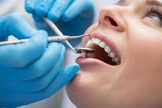

Kayvon Sadeghi
My name is Kayvon Sadeghi, and I am a dedicated and hardworking student currently pursuing a degree in biology. I have always been passionate about science and fascinated by the complexities of the natural world. As a result, I have decided to focus my studies on the field of biology, which allows me to explore the fundamental principles of life and the mechanisms that govern living organisms. My coursework has covered a wide range of topics, including genetics, evolution, ecology, and physiology, and I have gained valuable laboratory and research experience along the way.
While I have enjoyed studying biology in depth, I have also developed a keen interest in dentistry and its role in promoting overall health and wellbeing. I have always admired the work of dentists and their ability to improve the lives of their patients by alleviating pain, preventing oral diseases, and restoring dental function. I have also been impressed by the intricate nature of dental procedures, which require a high level of skill and precision. As a result, I have decided to pursue a career in dentistry and am currently preparing to apply to dental school.
My ultimate goal is to become a skilled and compassionate dentist who can provide high-quality care to patients and contribute to the advancement of the field of dentistry. In order to achieve this, I am working hard to excel in my biology courses and gain the necessary experience and skills to succeed in dental school. I am also actively involved in extracurricular activities, such as volunteering at dental clinics and participating in research projects related to oral health. With my strong background in biology and my passion for dentistry, I am confident that I have the potential to make a positive impact in the field and achieve my long-term goals.
Experience
Learning Assistant
• Ran sessions to help students learn how to succeed on OChem
• Reviewed and graded student OCHEM projects
• tutored students
• made study guides
Education
UC Riverside
University of California Riverside
University of California Riverside
Portfolio
